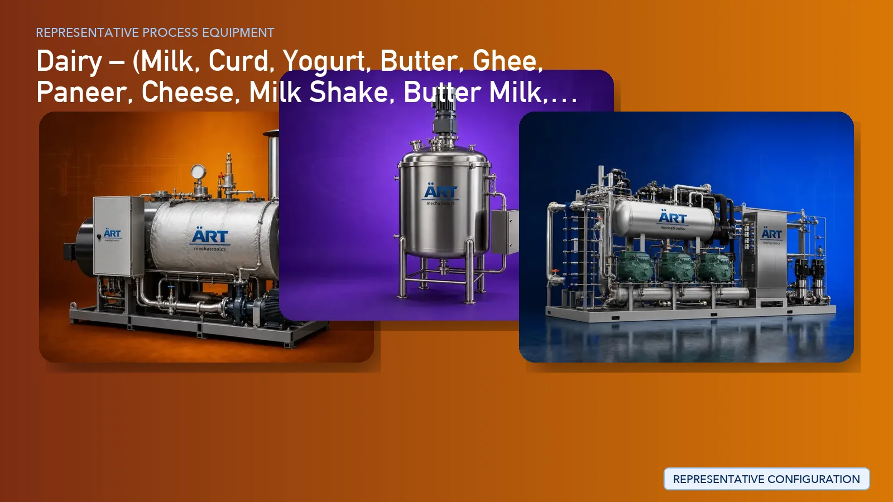

Complete Dairy Processing Plant & Machinery Solutions (Milk to Value-Added Dairy Products)
Dairy processing is a highly advanced and essential sector in the global food industry, involving the transformation of raw milk into a wide range of value-added products such as milk, curd, yogurt, butter, ghee, paneer, cheese, milk shakes, buttermilk, lassi, and milk powder.

About Dairy processing
The process requires strict hygiene standards, temperature-controlled processing, precision equipment, and automated systems to ensure product safety, consistency, and long shelf life.
ART Mechatronics offers complete turnkey dairy processing plant solutions, delivering advanced systems for milk reception, pasteurization, homogenization, fermentation, separation, evaporation, drying, and packaging, designed for large-scale industrial production and global compliance standards.
Common Dairy Process
Machines:
Quality check (fat, SNF, contamination)
Machines:
Machines:
Machines:
Machines:
Product-Wise Process & Machinery
🥛 1. MILK (PACKAGED MILK) Process: Pasteurization → Homogenization → Cooling → Packaging Machines:
- Pasteurizer
- Homogenizer
- Chilling System
- Milk Storage Tank
- Pouch Packing Machine / Bottle Filling Machine
Output: Standardized milk (full cream / toned / skimmed)
🍶 2. CURD / YOGURT Process: Pasteurization → Cooling → Culture Addition → Incubation → Cooling → Packaging Machines:
- Pasteurizer
- Fermentation Tank
- Incubation Chamber
- Cooling System
- Cup Filling Machine
Output: Set curd / stirred yogurt
🧈 3. BUTTER Process: Cream Separation → Cream Pasteurization → Churning → Washing → Packaging Machines:
- Cream Separator
- Cream Pasteurizer
- Butter Churner
- Butter Working Machine
- Butter Packing Machine
🧈 4. GHEE Process: Butter / Cream → Heating → Clarification → Filtration → Packaging Machines:
- Ghee Boiler
- Clarifier
- Filtration Unit
- Storage Tank
- Filling Machine
🧀 5. PANEER Process: Milk Heating → Coagulation → Curd Formation → Pressing → Cutting → Cooling → Packaging Machines:
- Paneer Vat
- Coagulation Tank
- Paneer Press
- Cutting Machine
- Cooling Tank
- Vacuum Packing Machine
🧀 6. CHEESE Process: Milk Standardization → Pasteurization → Culture Addition → Coagulation → Cutting → Whey Removal → Pressing → Ripening → Packaging Machines:
- Cheese Vat
- Curd Cutter
- Whey Drain System
- Cheese Press
- Ripening Chamber
- Cheese Cutting Machine
- Packaging Machine
🥤 7. MILK SHAKE Process: Milk → Mixing with flavor → Homogenization → Pasteurization → Cooling → Packaging Machines:
🥛 8. BUTTERMILK Process: Milk / Curd → Dilution → Mixing → Homogenization → Pasteurization → Packaging Machines:
🥛 9. LASSI Process: Curd → Mixing with water/sugar → Homogenization → Cooling → Packaging Machines:
- Mixing Tank
- Homogenizer
- Chilling System
- Bottle / Cup Filling Machine
🥛 10. MILK POWDER Process: Milk → Evaporation → Concentration → Spray Drying → Cooling → Packaging Machines:
- Multi Effect Evaporator
- Spray Dryer
- Cyclone Separator
- Fluid Bed Dryer
- Powder Packing Machine
Output:
- Skim Milk Powder
- Whole Milk Powder
Critical Support Systems
❄️ Refrigeration System
- Chilling plant for milk & products
♻️ CIP System (Clean-In-Place)
- Automatic cleaning of pipelines & tanks
🔥 Boiler & Steam System
- Required for heating & pasteurization
💨 Air Handling System
- Ensures hygiene & controlled environment
Complete Machinery List
- Milk Reception System
- Milk Analyzer & Weighing System
- Clarifier & Filter
- Pasteurizer (PHE)
- Homogenizer
- Cream Separator
- Fermentation Tanks
- Butter Churner
- Ghee Boiler
- Paneer Press
- Cheese Vat & Press
- Evaporator
- Spray Dryer
- Mixing Tanks
- Storage Tanks (SS)
- CIP System
- Refrigeration System
- Filling & Packaging Machines
Turnkey Dairy Plant Solutions
ART Mechatronics provides complete end-to-end dairy plant solutions, including:
- Process engineering & plant design
- Utility planning (steam, chilling, CIP)
- Product-specific line setup
- Automation & PLC control
- Installation & commissioning
- After-sales & AMC support
Why Art Mechatronics
- Expertise in large-scale dairy processing
- Fully hygienic SS food-grade systems
- Advanced automation & control
- High efficiency & minimal losses
- Export-grade plant solutions
Machinery in a Dairy plant
Where it's used
Get pricing & specs for the Dairy plant
Share the product, target capacity, current process and plant location. These details help our engineers discuss the right machine or line configuration.
One partner, from design to start-up
ART Mechatronics designs, manufactures, installs and commissions your Dairy solution with regional presence in India, UAE and Thailand.